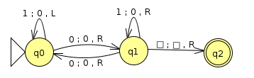
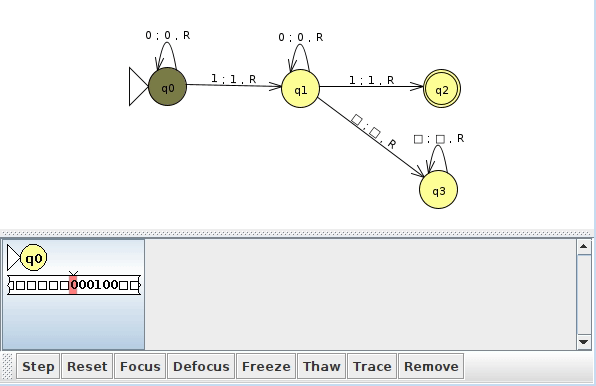
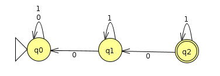
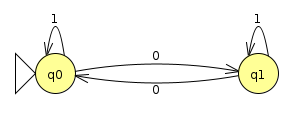
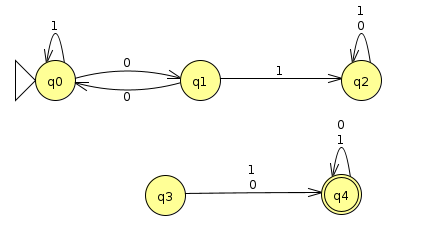

Weeks 10: Decidability
Chris Tralie
At this stage of the course, we're finally ready to talk about the limits of what can be computed. Surprisingly, some things cannot be computed at all! But we'll start by characterizing some things that can be computed.
String Encodings of automata
In the notes below, we'll sometimes refer to the string encoding <M> of some automaton M. Since languages are defined over strings in some alphabet, this will allow us to define languages where automata are the members of that language, such as the language of all Turing machines that accept the string "0". This would be written as
L = {<M> | M accepts "0"}
The string encoding of the Turing machine below would be in this language.
Recall that a Turing machine can be written as a 6-Tuple (Q, Σ, Γ, δ, F, q). In particular, the above example could be written as
({q0,q1,q2},{0,1},{0,1,▢},{(q0,1,0,L,q0),(q0,0,0,R,q1),(q1,0,0,R,q0),(q1,1,0,R,q1),(q1,▢,▢,R,q2),{q2},q0})
This 106 character string may not be the most intuitive way to write the above machine, but it uniquely identifies the Turing machine with a string over the alphabet {q,0,1,2,3,4,5,6,7,8,9,L,S,R,,(,),{,},▢}. If we zoom out a bit and think about the Church-Turing thesis, what we're really just saying is that every program has a string representation, which of course true in our everyday experience of writing programs.
Decidability
Before we think about things that can't be computed, let's talk about some things that can be computed. A language is decidable if it is possible to design a Turing machine that decides it. Recall that this means there are only two options for this Turing machine over all possible inputs: accept or reject; that is, the constructed machines halt. We do not allow the third possible Turing machine option, infinite looping, on any inputs to a machine that decides a language.
Note that the definition of decidable does not say that every Turing machine that recognizes the language in question also decides it, just that there exists one (i.e. it's possible to design such a Turing machine). Let's consider a simple language that's decidable: the language of all binary strings with at least two 1s. Here's a Turing machine that recognizes this language (Click here to download the corresponding JFLAP file):

This machine definitely recognizes the language. However, some strings that are not in the language cause the machine to loop, such as the input below
On the other handle, the machine below will never go into a loop, and will only accept or reject every possible input string (Click here to download the corresponding JFLAP file)

In what follows, I'll briefly go through a few examples of languages that are decidable by describing high level descriptions of machines that decide them, explaining why they never infinite loop. I'll then start to hint at undecidability of some related languages. Refer to Sipser chapter 4 for more details.
Example 1: ADFA
Let
ADFA = {<B,w> | B is a DFA that accepts w}
This language is decidable. In class we discussed we can reduce a DFA to a Turing machine by having the head only ever move to the right. The only technicality is that a Turing machine accepts instantly, while a DFA must run through the whole string before we consider a state as accepting. We can fix this by transitioning all accept states of the DFA to a final state upon reading a blank. Regardless, a Turing machine simulating a DFA as such will always halt, as it either rejects or accepts once it's run through the entire input.
Note: This is an example of a Universal Turing Machine that stores the instructions for another automaton on its tape, as well as the working memory for the other machine's execution. The Von Neumann architecture is a similar idea contemporary to the Universal Turing Machine's conception.
Example 2: ANFA
Let
ANFA = {<B,w> | B is an NFA that accepts w}
This language is also decidable. Since we've already proved that ADFA is decidable, we can use it as a subroutine to decide ANFA. In particular, we'll make a Turing machine that first follows the NFA to DFA translation procedure, which eventually halts. The machine then calls ADFA on the resulting DFA, which also halts by our above argument.
Example 3: AREG
Let
AREG = {<R,w> | R is a regular expression that generates w}
We will use ANFA as a subroutine to do this. In particular, we'll make a Turing machine that starts by following the regular expression to NFA translation procedure, which eventually halts. Then, the machine calls ANFA on the resulting NFA, which also halts by our above argument.
Example 4: EDFA
Let
EDFA = {<M> | M is a DFA that does not accept anything}
In other words, it is the language of all "empty" DFAs. The three examples below are all examples of DFAs whose string encodings would be in this language
|  |  |  |
The proof that this is decidable will require a bit more ingenuity. We can see by the above examples that it's not enough to simply check to see if the set of final states is empty. Moreover, a naive approach that runs all possible strings through the DFA will fail to halt, since there are infinitely many strings over an alphabet. Instead, we'll use a directed graph search approach, where we see if, starting at the start state, it is possible to reach an accept state by following a sequence of arrows. Any blind graph search algorithm, such as breadth-first search, will suffice. If any of the nodes it encounters along the way are an accept state, then the machine rejects. Otherwise, if it runs out of states to visit, it will accept, as there is no possible string that will reach an accept state starting at the beginning. This algorithm will halt on a finite graph, as it will run out of nodes to process.
Example 5: EQDFA
Let
EQDFA = {<M1,M2> | M1 and M2 are DFAs that recognize the same language}
This language is decidable. We can actually use a clever trick to invoke EDFA as a subroutine to decide EQDFA. Consider the disjoint union of two sets A and B, which is defined as
\[ A \Delta B = (A \cap \overline{B}) \cup (\overline{A} \cap B) \]
In English, the disjoint union of A and B is the set of all elements which are in A but not B, or which are in B but not A. The highlighted region of the Venn diagram below shows this:
If M1 and M2 accept the same language, then the disjoint union of L(M1) Δ L(M2) will be empty. This is just a fancy way of saying that the languages the machines recognize have everything in common and nothing not in common. We can use this fact to devise a new DFA which is
\[ M = (M_1 \cap \overline{M_2}) \cup (M_2 \cap \overline{M_1}) \]
We now have to use the fact that DFAs are "closed" under intersection ∩, union ∪, and complementation; that is, the result of these operations on DFAs is still a DFA. These are all things that we have proved at various points, so we can affirm that M is a DFA. So our decider can construct M via these different operations, and then call EDFA. If EDFA accepts, then accept; otherwise, reject.
Some Facts About Conext Free Languages
I'll briefly state some facts about context free languages that are useful for proving decidability of collections of context free languages, which will help you on homework 9. I'll leave some more details to Sipser
1. ACFG is decidable
The language
ACFG = {<G,w> | G is a context free grammar that generates w}
is decidable. There is an algorithm known as the CYK algorithm (Sipser Theorem 7.15) which decides this once the grammar is converted into "Chomsky Normal Form" (Sipser 2.1), which is a process that halts.
2. ECFG is decidable
ECFG = {G | G does not generate any strings}
is decidable. See Sipser theorem 4.8 for details
3. EQCFG is not(!) decidable
EQCFG = {<G1,G2> | G1 and G2 generate the same language}
is not decidable. We can't use the disjoint union trick we used with EQDFA, because though context free grammars are closed under union (we can simply branch to one or the other from the start), context free grammars are not closed under intersection. For instance, consider the following context free grammars G1 and G2
G1 |
G2 |
|
Grammar |
|
|
Language Generated |
{ambncn | m, n ≥ 0}
An arbitrary number of a's followed by an equal number of b's and c's |
{ambmcn | m, n ≥ 0}
An equal number of a's and b's followed by an arbitrary number of c's |
Then
L(G1) ∩ L(G2) = {anbncn | n ≥ 0}
But we showed in class that this language is not context free, and we in fact need a Turing machine to decide it. But are we just not being clever enough, and there is some other trick we can exploit? No, unfortunately. This language is not decidable.
However, there is another CFG construction that we can to show other decidable languages involving CFGs.
4. The intersection of a context free language LC and regular language LR is context free
This can be proved by creating a pushdown automaton for LC and running it "in parallel" with the DFA for the regular expression LR. Similarly to the proof you did on Homework 3 problem 2, this can be accomplished by a cartesian product of states, where the accept states are the cartesian product of accept states in the machine for LC and LR. The resulting machine is still a pushdown automaton.
The reason this argument doesn't work if both languages are context free is because we would need two stacks to run them in parallel, while if only one of them is context free, we only need one stack.